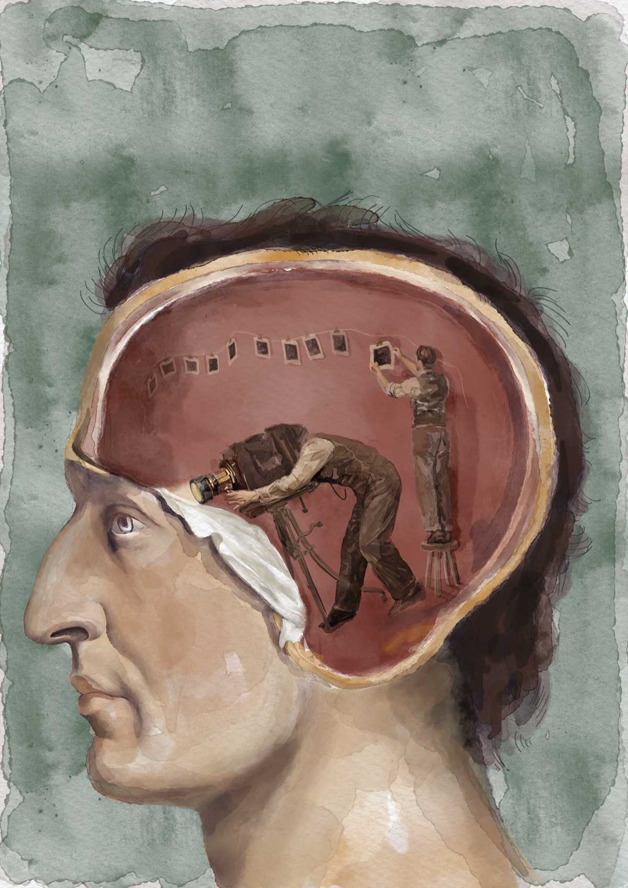
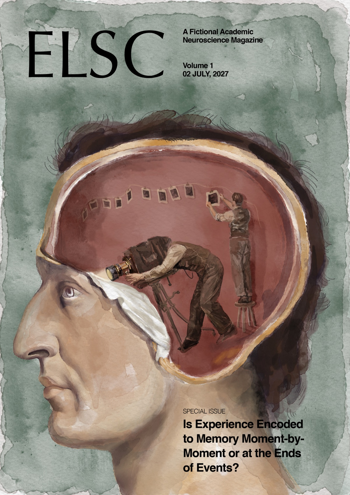
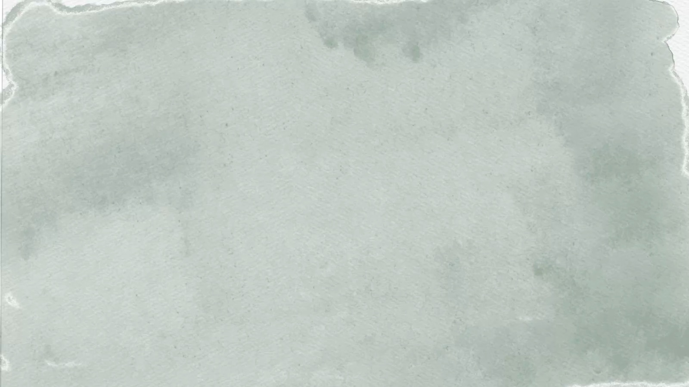
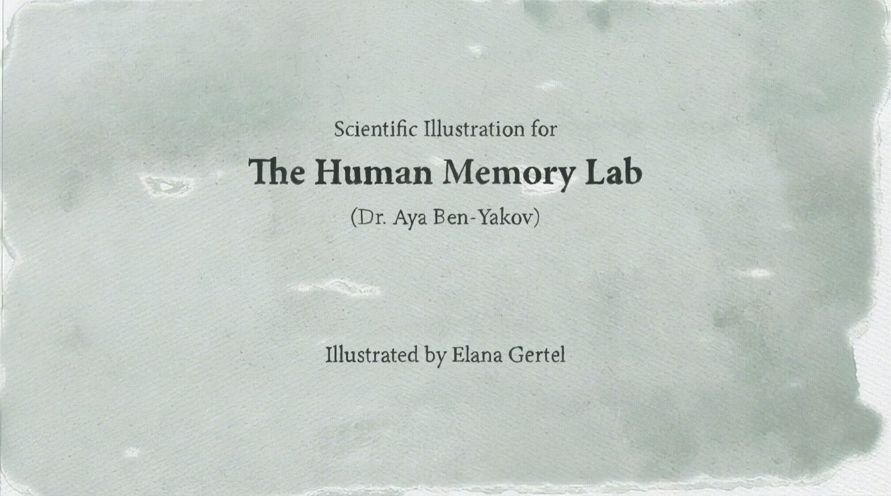

The Memory Lab
HEB, EN
Contact Me




In a scientific illustration course at Bezalel, each group was paired with a lab at ELSC, the brain research center at Givat Ram. I got Dr. Aya Ben-Yakov's Human Memory Lab. They are testing two theories: does every experience become a memory continuously, like a film, or does the brain pause and turn a whole sequence into memory at once, like frames? My task was to communicate that tension. The poster asks one question: what actually happens in there?
I talked with Dr. Ben-Yakov and read many articles, but most of my time went into finding the right metaphor. After racking my brain, I had a sudden idea: chocolate soufflé. Either one big batter divided into ramekins, or each ramekin made separately and baked in its own time. The oven is the brain. Together we swapped the identical ramekins for different vessels, because every memory is different.
A second animation shows that connected experiences are remembered in order, while unconnected ones get mixed up. Two necklaces fall into a pile, but only the beads on a string keep their place. I chose watercolor because it's watery and fading, like memory, and simple objects everyone understands. I rejected a shape-shifting idea because it tested viewers instead of explaining the discovery.
Outcome and reflection
Image before: the poster and both animations together.
People were impressed by how simple the metaphors were next to such complex science. The project was featured in a university exhibition, shown on the big screen and hung in the school. Next time, I'd make the necklace animation clear without my explanation, maybe with a little text.